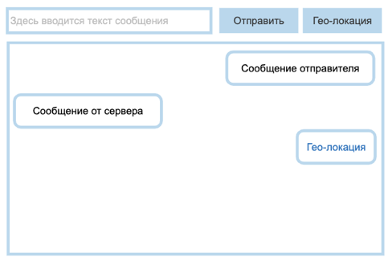

До этого мы рассматривали классический способ клиент-серверного взаимодействия
request/response.
Вспомним алгоритм:
Открывается канал передачи данных;
Клиент делает запрос до сервера;
Сервер формирует и отправляет ответ клиенту;
Канал передачи данных закрывается.
Иногда в приложениях требуется постоянно держать канал данных открытым. В схеме
request/response инициатором выступает клиент. Сервер не может отправить данные клиенту без
инициативы со стороны клиента. Для реализации различных приложений (например, чат или система
серверных уведомлений) необходимо, чтобы сервер мог отправлять данные клиенту без запроса с его
стороны. Для это существует несколько инструментов. Рассмотрим их ниже.
EventSource. Реализация и применение
Интерфейс EventSource
используется для получения серверных событий (Server-sent events). Он устанавливает соединение с
сервером по HTTP и получает события в формате text/event-stream без закрытия соединения.
Схема работы следующая:
Открывается канал передачи данных;
Соединение висит открытым. Сервер может отправлять события без дополнительных запросов со
стороны клиента;
Канал передачи данных закрывается или клиентом, или сервером.
После установки EventSource-соединения
по этому каналу отправлять сообщения клиенту может только сервер. Клиент может отправить данные
только в момент установки соединения.
Открытие соединения на стороне клиента:
const eventSource = new EventSource("/url/");
// Подписка на получение данных с сервера
eventSource.onmessage = (event) => {
console.log(JSON.parse(event.data))
}
Поддержка открытого соединения на стороне сервера (пример с express.js):
.get("/url/", (req, res) => {
res.writeHead(200, {
"Content-Type": "text/event-stream",
"Connection": "keep-alive",
"Cache-Control": "no-cache"
});
res.write('data: "открытие соединения"\n\n');
})
EventSource используется в случаях, когда клиенту нет необходимости постоянно отправлять данные на сервер, но необходимо часто их получать. Это могут быть графики, обновляемые в реальном времени, слежение за отправкой уведомлений с сервера и прочее.
WebSocket позволяет открыть постоянное двунаправленное сетевое соединение между браузером пользователя и сервером. С помощью его API вы можете отправить сообщение на сервер и получить ответ без выполнения HTTP-запроса, причём этот процесс будет событийно-управляемым.
Данный инструмент используют для:
Реализации чата;
Онлайн-редакторов (текста, кода, графических и так далее)
Различных инструментов банковской сферы;
Всего, что требует постоянного получения информации с сервера.
Работа с WebSocket в браузере представлена классом WebSocket. Для открытия WebSocket-соединения необходимо создать экземпляр класса WebSocket.
const websocket = new WebSocket('wss://ws.ifelse.io/');
Есть несколько событий слежения за websocket-соединением:
• open — срабатывает, когда соединение готово отсылать и принимать данные;
• close — срабатывает, когда соединение закрывается;
• message — событие, обрабатывающее все получаемые сообщения;
• error — срабатывает, когда происходит ошибка соединения.
Также есть несколько методов:
• websocket.send(message) — отправка данных по WebSocket-соединению;
Как происходит клиент-серверное взаимодействие с использованием EventSource?
Сервер может регулярно отправлять данные, клиент не может
Задание 10.6.2
Как происходит клиент-серверное взаимодействие с использованием WebSocket?
Клиент и сервер могут регулярно обмениваться данными
Практика
Эта итоговая практика потребует от вас комбинации алгоритмов решения как актуального модуля, так и ранее изученных тем (инструменты работы в браузере).
Задание 3.
Реализовать чат на основе эхо-сервера wss://echo-ws-service.herokuapp.com.
Интерфейс состоит из input, куда вводится текст сообщения, и кнопки «Отправить».
При клике на кнопку «Отправить» сообщение должно появляться в окне переписки.
Эхо-сервер будет отвечать вам тем же сообщением, его также необходимо выводить в чат:
Добавить в чат механизм отправки гео-локации:

При клике на кнопку «Гео-локация» необходимо отправить данные серверу и в чат вывести ссылку на https://www.openstreetmap.org/ с вашей гео-локацией. Сообщение, которое отправит обратно эхо-сервер, не выводить.
.svg)